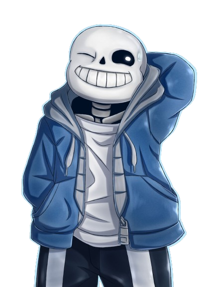
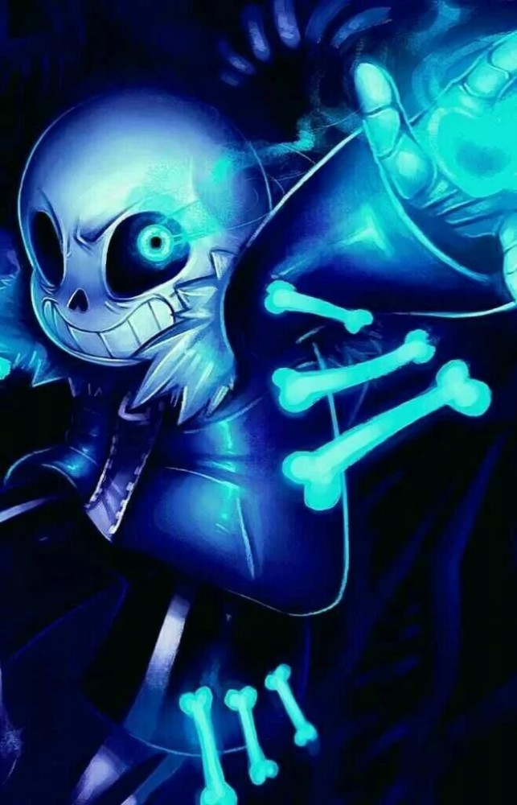
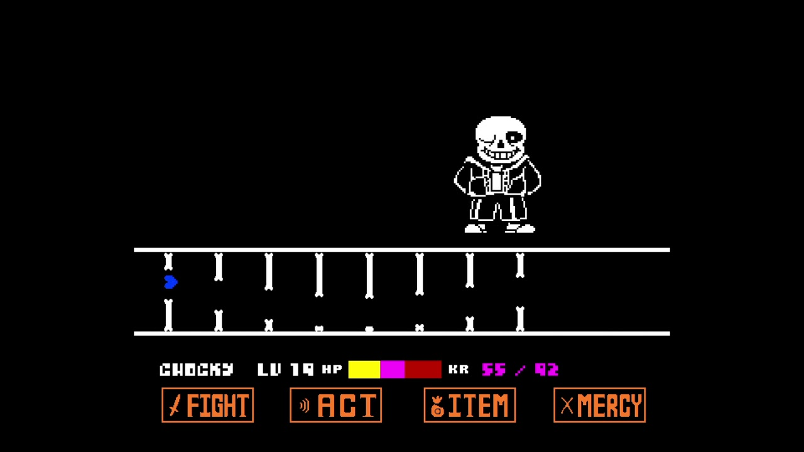
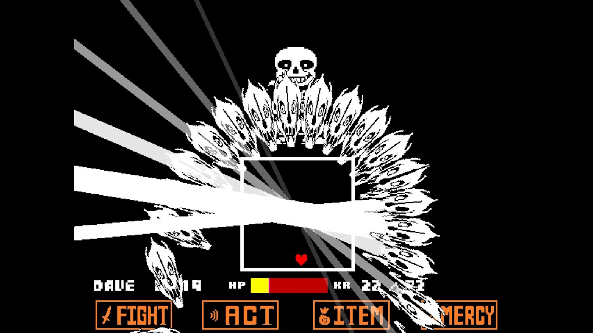

sans est un squelette faisant souvent des blagues et est un gros fainéant mais cache en réalité le souvenir des resets réalisés par l'humain.
Il a pour ami Undyne, Alphys, Toriel, Asgore ,a un petit frère nommé PAPYRUS (quand même 2X plus grand que sans ) et comme père
GASTER.
Son Histoire
Il avait une mère inconnu et un père. Puis il aidait son père à faire des expèriences sur la "détermination".
Cela se terminai toujours par des échecs. Puis il décidèrent de tester l'expérience sur sans. Elle a légèrement réussi et sans a reçu une très petite quantité de
détermination entourant son âme de monstre. Un jour, après cette légère réussite, le père de sans est tomber dans le CORE
( Une ancienne expérience ) et fût dispersé en une infinité de morceau dispercé dans tout l'univers et fût oublié par tout les êtres ayant une conscience.
Mais sans s'en rappelai. Il avait juste oublié qui il était et cherche donc secrètement depuis cet incident un moyen pour le ramener. C'est depuis ce moment qu'il a commencé
à être paresseux et à faire des blagues ( très marrantes je trouve ).
Son Apparence et sa Personnalité
sans a un large crâne avec un large sourire. Il a des yeux complètement noirs avec des pupilles blanches. Il est assez petit ( taille de l'humain ), porte tout le temps une
blouse bleue ( dont il laisse la fermeture éclair ouverte ) avec une capuche grise, un T-shirt blanc, un short noir avec des rayures blanches et des chaussons roses.
En combat, il a la pupille droite qui disparaît et la pupille gauche devient un cercle de couleur cyan avec une lueur qui dégage beaucoup d'énergie.
sans est très paresseux ( il dort très souvent ) et adore faire des blagues du type jeu de mot et plus souvent sur les squelettes (ex: Bone apetit ). Il est très attaché à
son petit frère et est en colère lorsque l'on fait du mal a PAPYRUS.


Ses Capacités
sans a un tas de capacités utiles en combats ou dans sa vie courante:
Pouvoirs des os: peut faire apparaître des os là ou il le souhaite sur une surface solide, blessant ses adversaires, utilisé en combat.
Gaster Blaster: Fait apparaître un crâne d'une espèce de dragon géant qui éjecte un rayon laser et sans peut voler dessus, utilisé en combat.
Esquive: esquive quasiment toute les attaques y compris lorsqu'il est quand même touché, capacité passive ( présente tout le temps ).
Shortcut: lui permet de se téléporter, utilisé en combat et dans sa vie quotidienne.
Karma: plus longtemps tu touche une attaque plus tu perdras de PV au fil du temps comme un effet d'empoisonnement, passive, utile lors des combats
Magie Bleue: lui confère un pouvoir de grâvité sur l'ennemi, lui permettant d'enchaîner plein d'attaques et n'est présente que chez les squelettes, utilisé en combat


Ses Faiblesses
Ce gars est tellement fort en combat qu'il n'a pas de faiblesses ( c'est le best ).
Anecdotes
Son vrai nom est "Classic sans" car il existe une infinité de versions de sans dans son multivers, lui même appelé le "sansverse"
Sa musique de combat peut-être trouvé dans le lien ci contre: Megalovania
Il existe une musique quand on se bat contre lui en mode pacifiste mais, le combat contre lui en mode pacifiste n'existant pas, n'est jamais vraiment utilisé dans le jeu.
Cliquez sur ce lien si vous voulez l'écouter: Song That Might Play When You Fight Sans
Il ne met pas toute sa force dans son combat contre l'humain car il sait qu'il pourra reset et revenir quand il le tue
sans est aussi appelé "the easiest ennemy" à cause de ces statistiques (ATK=1 DEF=1 PV=1) mais il les compense grâce à son esquive et son karma
Comme tous les monstres n'ayant fait de mal a personne, il a un LV de 1
Malgré qu'il ait un peu de détermination, son âme ressemble à celle des autres monstres
Plein de personnes disent que c'est le personnage de jeu vidéo le plus difficile à vaincre
Il s'appelle ainsi car il parle avec la police "Comic sans ms"